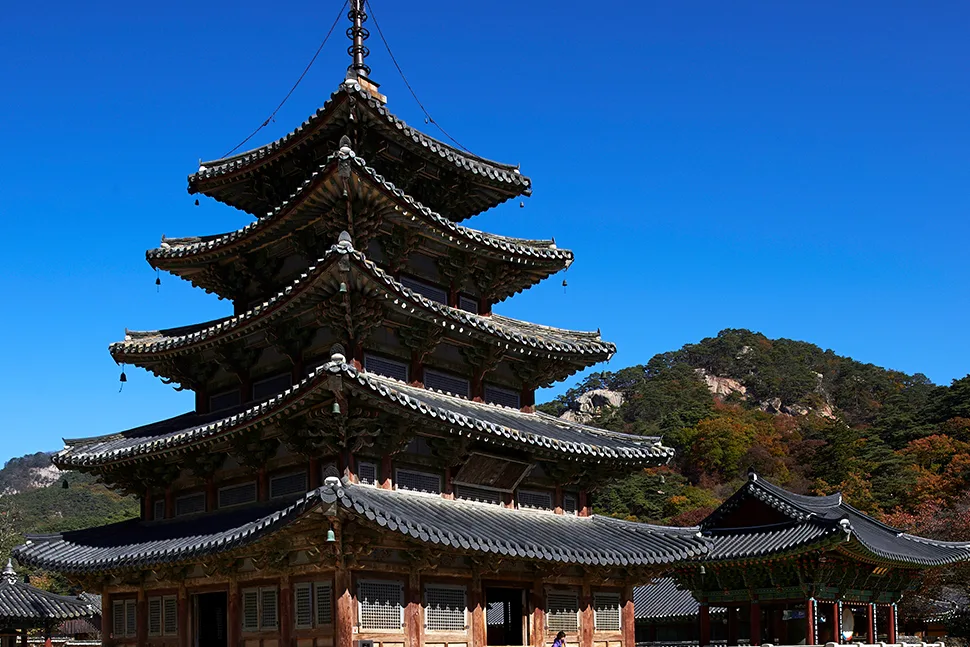
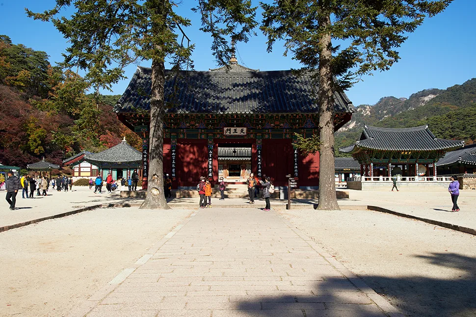
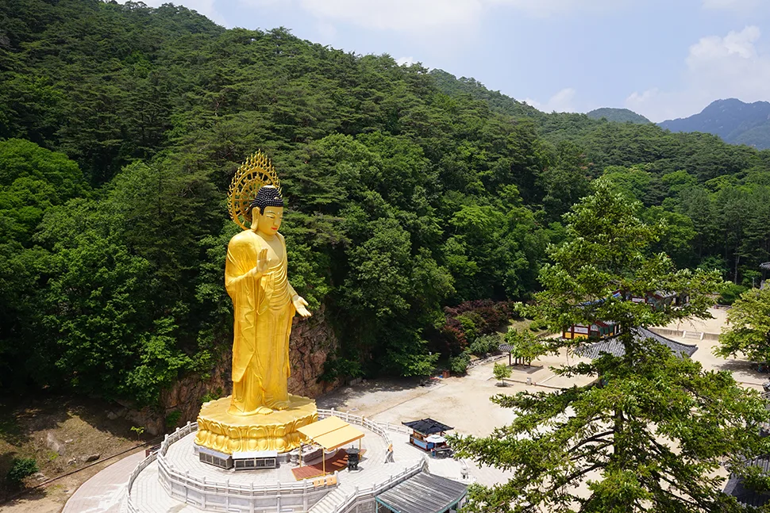
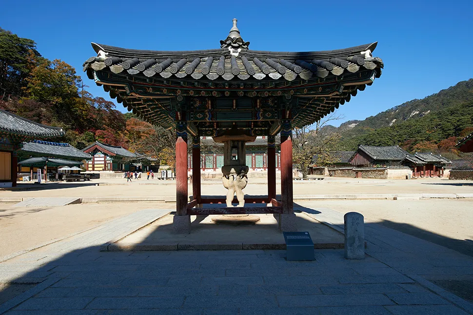
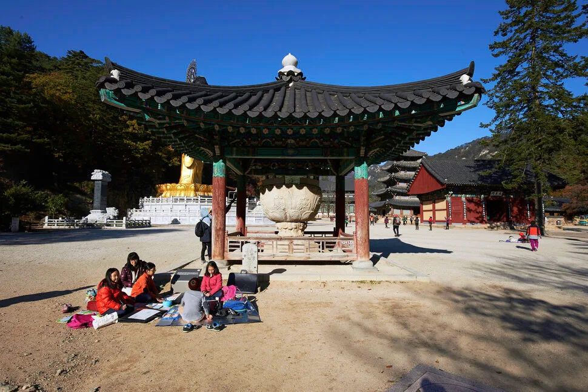
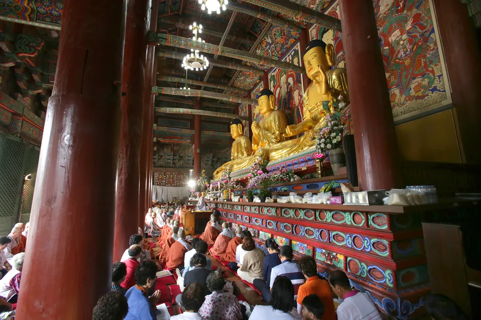
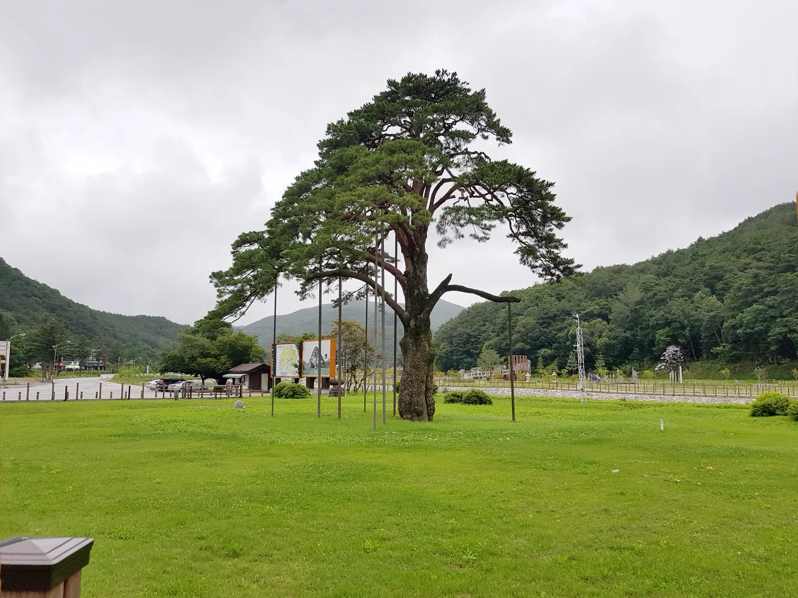
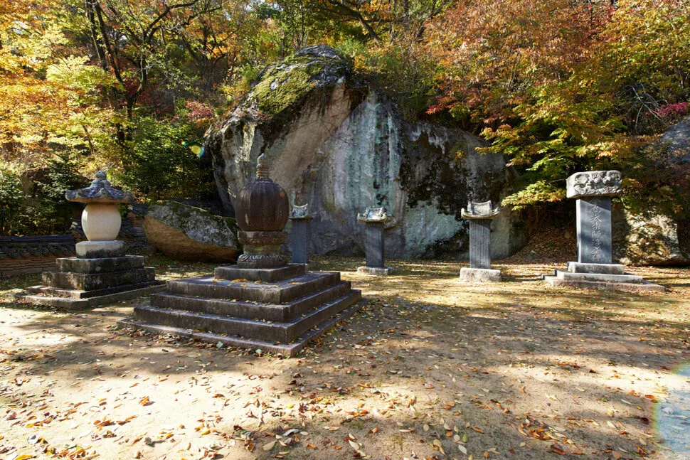

▲ 법주사 국보 팔상전. 현존하는 우리나라 유일의 목탑으로, 뒤로 속리산 봉우리가 병풍처럼 둘러섰다 ⓒ 법주사
충북 보은군 속리산면, 해발 1,058m 속리산 자락에는 553년(신라 진흥왕 14년) 창건된 법주사가 있다. 경내에 서면 조선 7대 임금 세조가 직접 벼슬을 내렸다는 소나무 정이품송을 지나온 기억이, 그리고 세조가 요양차 거닐었다는 세조길을 걸어온 다리가 아직 남아 있다. 국보 팔상전을 품은 천년 고찰과 문장대로 이어지는 등산로, 가을이면 절정에 이르는 단풍까지 — 2026년 기준으로 속리산국립공원 방문 전 확인해 둘 정보를 모았다.
1. 법주사 — 1500년 고찰과 국보 팔상전
법주사는 의신조사가 인도(천축)에서 구법 순례를 마치고 흰 나귀에 불경을 싣고 돌아와 머물렀다는 데서 "부처님의 법(法)이 머무는(住) 절"이라는 이름이 붙었다. 고려 숙종 때 31본산 중 하나로 지정될 만큼 위세가 컸으나, 정유재란(1597년) 때 전소된 뒤 인조 2년(1624년) 사명대사와 벽암대사가 중건해 지금의 모습을 갖췄다. 현재 국보 3점, 보물 12점을 비롯해 충북 유형문화재 21점, 문화재자료 1점을 보유한 대한불교조계종 제5교구 본사이자, 절 일원이 사적 제503호로 지정돼 있다.
법주사를 대표하는 문화재는 단연 팔상전(捌相殿)이다. 부처의 일생을 여덟 장면으로 나눠 그린 팔상도를 모신 5층 목조 건축물로, 조선시대 화재로 대부분의 목탑이 사라진 가운데 국내에 남은 사실상 유일한 목탑으로 꼽힌다. 원래 553년 창건 당시부터 있었을 것으로 추정되나 정유재란으로 소실됐고, 1605~1626년 사이 재건됐다. 이 같은 희소성과 역사성을 인정받아 국보 제55호로 지정돼 있다.

▲ 법주사 경내로 들어서는 천왕문. 좌우로 늘어선 전나무 사이 참배로를 지나면 팔상전과 대웅보전이 차례로 나타난다 ⓒ 법주사
2. 금동미륵대불과 경내를 채운 국보들

▲ 법주사 금동미륵대불. 신라 혜공왕 때 진표율사가 처음 조성했다고 전해지며, 현재 불상은 높이 33m·무게 160톤으로 2002년 금 약 80kg을 들여 개금했다 ⓒ 법주사
경내 가장 눈에 띄는 것은 33m 높이로 우뚝 선 금동미륵대불이다. 신라 혜공왕 12년(776년) 진표율사가 금동미륵대불을 처음 조성했다고 전해지나, 고종 9년(1872년) 흥선대원군이 당백전을 주조하며 압수해 사라졌다. 이후 콘크리트 불상으로 복원됐다가, 1990년부터 25개월에 걸쳐 청동으로 다시 조성해 1993년 완공했고 2002년에는 금 약 80kg을 들여 전체를 개금했다.
미륵대불 외에도 법주사 경내에는 국보급 석조 문화재가 여럿이다. 통일신라시대인 720년 조성된 것으로 추정되는 쌍사자석등(국보 제5호)은 두 마리 사자가 뒷다리로 서서 앞다리와 등으로 화사석(火舍石)을 떠받치는 독특한 구조로 유명하다. 대웅보전 앞뜰의 석련지(국보 제64호)는 하나의 화강암을 통째로 깎아 만든 대형 연꽃 모양 돌그릇으로, 통일신라시대 최대 규모의 석조 유물로 꼽힌다.

▲ 국보 제5호 쌍사자석등. 통일신라시대인 720년경 조성된 것으로 추정되며, 두 마리 사자가 몸으로 등불을 떠받치는 조형이 이채롭다 ⓒ 법주사

▲ 국보 제64호 석련지. 하나의 화강암을 깎아 만든 통일신라시대 최대 규모 석조 연지로, 뒤로 팔상전과 금동미륵대불이 함께 보인다 ⓒ 법주사

▲ 대웅보전 내부. 삼존불을 모신 법당에서는 사시사철 예불과 법회가 이어진다 ⓒ 법주사
3. 정이품송 — 세조에게 벼슬을 받은 소나무

▲ 천연기념물 제103호 정이품송. 1464년 세조의 가마가 나뭇가지에 걸릴 위기에 처하자 가지가 스스로 들렸다는 이야기가 전해지며, 가지가 늘어져 지금은 여러 개의 지지대가 줄기를 받치고 있다 ⓒ WBjw(Wikimedia Commons, CC BY-SA 3.0)
법주사로 가는 길목, 충북 보은군 속리산면 상판리에는 천연기념물 제103호로 지정된 소나무 정이품송(正二品松)이 서 있다. 나이는 약 600살로 추정되며 높이 14.5~15m, 가슴높이 둘레 4.5~4.77m, 가지는 동쪽 10.3m·서쪽 9.6m·북쪽 10m까지 뻗어 있다.
이름의 유래는 조선 세조 10년(1464년), 왕이 온양 온천과 속리산을 오가며 법주사로 행차하던 때로 거슬러 올라간다. 왕이 타고 가던 가마(연)가 소나무 가지에 걸릴 위기에 처하자 세조가 "가마가 걸린다"고 말했는데, 그 말이 끝나기가 무섭게 가지가 저절로 위로 들려 무사히 지나갈 수 있었다고 한다. 이에 세조가 이 소나무에 정2품 벼슬(지금의 장관급)을 내렸고, 이후 '연걸이 소나무' 또는 '정이품송'이라 불리게 됐다. 1962년 천연기념물 제103호로 지정돼 보호받고 있으며, 1993년 2월 강풍을 동반한 눈보라와 2004년 3월 폭설로 각각 가지 일부가 훼손되는 아픔을 겪기도 했다. 흥미롭게도 보은군 장안면 서원리에는 정이품송의 '아내'로 불리는 소나무 정부인송(서원리 소나무)도 자라고 있어, 부부목 이야기로 함께 회자된다.
4. 세조길 — 왕이 요양하며 거닐던 3.2km 숲길

▲ 법주사 인근 숲길에서 만날 수 있는 승탑(부도)군. 가을이면 단풍과 어우러져 고즈넉한 분위기를 자아낸다 ⓒ 법주사
세조길은 세조가 피부병 치료를 위해 법주사에 요양차 머물며, 복천암의 신미대사를 만나러 오갔다는 옛길에서 유래했다. 국립공원공단 속리산국립공원사무소가 안전하고 쾌적한 탐방을 위해 계곡과 저수지를 따라 데크길을 정비해 2016년 9월 정식 개통했으며, 개통 첫해에만 70만 명 넘게 다녀갈 만큼 반응이 뜨거웠다. 완만한 경사에 유모차·휠체어도 다닐 수 있는 무장애 구간(약 1.2km)까지 갖춰 남녀노소 누구나 부담 없이 걸을 수 있다.
| 구간 | 거리 | 소요시간(편도) | 특징 |
|---|---|---|---|
| 법주사 삼거리 ~ 세심정 | 약 2.4km | 약 50분 | 저수지·계곡을 따라 이어지는 완만한 데크길, 무장애 구간 포함 |
| 세심정 ~ 복천암 | 약 0.8km | 약 20분 | 세조가 신미대사를 만나러 오간 구간, 약간의 오르막 |
| 전체(법주사~복천암) | 약 3.2km | 편도 약 70분 | 2016년 9월 개통, 왕복 약 2시간 소요 |
세조길 이용 팁
- 경로: 법주사 삼거리 – 남산 화장실 – 상수원지 – 탈골암 입구 – 목욕소 – 세심정 – (복천암)
- 세심정 인근에는 휴게소와 정자가 있어 중간에 쉬어가기 좋다
- 가을 단풍철에는 법주사 진입로 오리숲길부터 세조길까지 단풍 터널이 이어진다
- 별도 입장료 없이 무료로 이용할 수 있다
국립공원공단 속리산국립공원사무소에서 탐방로 정보 확인 가능
5. 속리산국립공원 — 문장대 등산코스, 단풍, 입장료·주차
속리산국립공원은 1970년 3월 24일 건설부 고시로 지정된 국내 여섯 번째 국립공원으로, 충북 보은·괴산과 경북 상주에 걸쳐 총 278.9㎢ 면적을 이룬다. 화강암과 변성퇴적암이 뒤섞여 날카로운 암봉과 깊은 계곡이 어우러진 산세 덕에 예로부터 '제2의 금강산(소금강산)'으로도 불렸다. 대표 봉우리인 문장대(1,033m)까지는 법주사에서 세심정을 거쳐 오르는 코스가 가장 널리 알려져 있다. 법주사 매표소에서 문장대까지는 약 5.5km, 왕복 4~5시간이 걸리며, 여기서 천왕봉(1,058m)까지 연결해 원점 회귀하면 왕복 약 8시간 코스가 된다. 경사가 급한 구간도 있지만 전체적으로는 초보자도 도전할 만한 난이도로 꼽힌다.
| 코스 | 거리·소요시간 | 비고 |
|---|---|---|
| 법주사 ~ 세심정 ~ 문장대 | 편도 약 5.5km, 약 2~2.5시간 | 가장 대중적인 코스, 세조길과 구간 일부 공유 |
| 법주사 ~ 문장대 ~ 천왕봉 ~ 법주사(원점회귀) | 왕복 약 12km, 약 8시간 | 속리산 정상까지 잇는 완주 코스 |
단풍은 해발이 높은 곳에서 먼저 물들어 아래로 내려온다. 국립공원공단 속리산국립공원사무소가 안내하는 법주사지구 고도별 단풍 시기를 보면, 문장대·천왕봉 정상과 능선(해발 900~1,000m)은 10월 3일~13일, 학소대·배석대·경업대(600~900m)는 10월 14일~20일, 비로산장~세심정~법주사(300~600m)는 10월 21일~11월 2일, 정이품송·사내리 일대(300m 이하)는 11월 3일~11일에 각각 절정을 이루는 것으로 안내된다. 법주사 경내와 세조길 일대는 대략 10월 21일~11월 2일이 절정 시기인 셈이며, 다만 그해 기온에 따라 시기가 달라질 수 있어 방문 직전 국립공원공단이나 지역 관광 안내 채널에서 실시간 단풍 현황을 확인하는 편이 정확하다.

▲ 속리산국립공원 높이·시기별 단풍 명소 안내도. 법주사지구는 고도가 낮아질수록 10월 초에서 11월 중순까지 순차적으로 단풍이 내려온다 ⓒ 국립공원관리공단 속리산국립공원사무소
입장료·주차 정보(2026년 기준)
- 속리산국립공원 입장료: 2023년 1월부터 전 국립공원 전면 무료
- 법주사 문화재관람료: 2023년 5월 4일부로 전액 무료 전환(개정 문화재보호법에 따라 정부 예산으로 대체)
- 주차료: 법주사 주차장 1일 5,000원(구간별로 요금이 다를 수 있어 현장 안내 확인 필요)
- 법주사 문의: 043-543-3615 / 속리산국립공원사무소: 043-542-5267
6. 하루 여행 코스 제안
| 시간대 | 장소 | 메모 |
|---|---|---|
| 오전 | 정이품송 – 세조길(법주사~세심정) | 완만한 데크길, 편도 약 50분 |
| 낮 | 법주사 경내(팔상전·금동미륵대불·쌍사자석등·석련지) | 문화재관람료 무료, 천천히 둘러보면 1~2시간 |
| 오후 | 세심정~복천암 또는 문장대 방향 트레킹 | 체력에 따라 세심정 왕복 또는 문장대 코스 선택 |
| 저녁 | 속리산 관광특구 먹거리촌 | 산채정식·송이버섯 요리 등 지역 특산 음식 |
정이품송과 세조길, 법주사 경내를 묶으면 반나절이면 충분하고, 문장대까지 오르는 등산까지 더하면 하루 코스로 알맞다. 가을 단풍철에는 오전 일찍 도착해야 주차와 인파 부담이 적다.
7. 정리
체크포인트
- 법주사는 553년 창건된 고찰로, 국보 팔상전(제55호)·쌍사자석등(제5호)·석련지(제64호)를 보유하고 있다.
- 정이품송(천연기념물 제103호)은 1464년 세조의 가마가 지나갈 때 가지가 스스로 들려 정2품 벼슬을 받았다는 전설이 전해진다.
- 세조길은 법주사~복천암 약 3.2km(법주사~세심정 2.4km), 2016년 9월 개통됐으며 무장애 구간을 포함한다.
- 속리산국립공원 입장료(2023년 1월)와 법주사 문화재관람료(2023년 5월) 모두 전면 무료로 전환됐다. 주차료는 1일 5,000원.
- 단풍은 문장대·천왕봉(10.3~10.13)부터 시작해 고도가 낮아질수록 늦어지며, 법주사 일대(300~600m)는 10월 21일~11월 2일경 절정을 이룬다. 문장대 등산은 법주사 기준 왕복 약 8시간이 걸린다.